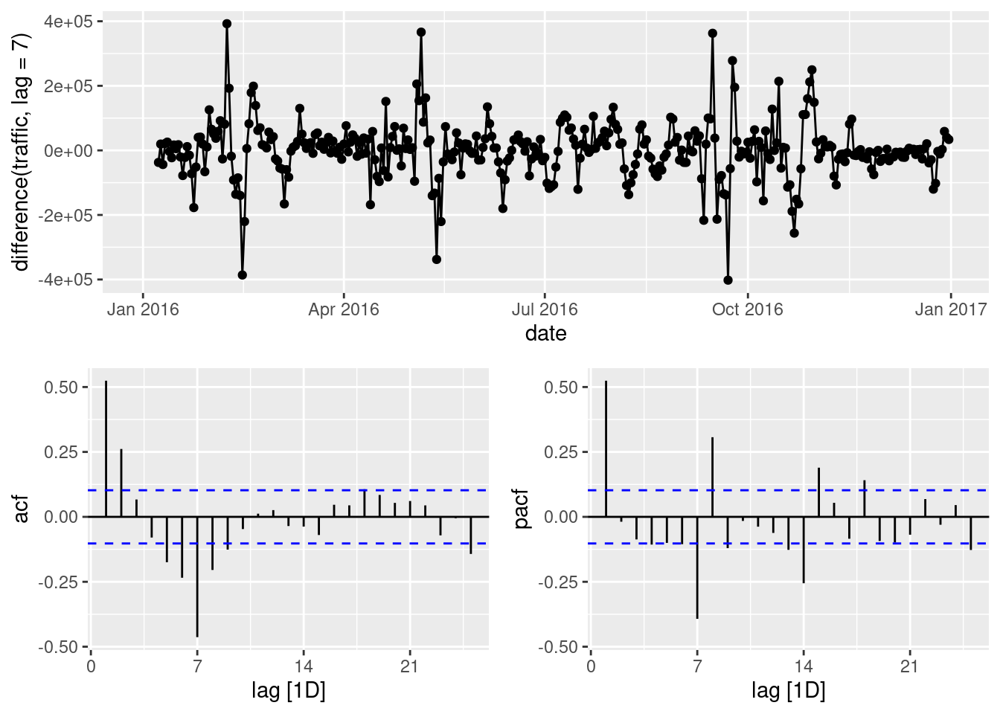

── Attaching core tidyverse packages ──────────────────────── tidyverse 2.0.0 ──
✔ dplyr 1.1.4 ✔ readr 2.1.5
✔ forcats 1.0.0 ✔ stringr 1.5.1
✔ ggplot2 3.5.1 ✔ tibble 3.2.1
✔ lubridate 1.9.3 ✔ tidyr 1.3.1
✔ purrr 1.0.2
── Conflicts ────────────────────────────────────────── tidyverse_conflicts() ──
✖ dplyr::filter() masks stats::filter()
✖ dplyr::lag() masks stats::lag()
ℹ Use the conflicted package (<http://conflicted.r-lib.org/>) to force all conflicts to become errors
library(tsibble) # time series data frame wrangling
Registered S3 method overwritten by 'tsibble':
method from
as_tibble.grouped_df dplyr
Attaching package: 'tsibble'
The following object is masked from 'package:lubridate':
interval
The following objects are masked from 'package:base':
intersect, setdiff, union
library(fable) # forecasting models
Loading required package: fabletools
library(feasts) # feature extraction, statistics, visualization for time series datalibrary(readxl)library(urca) # for auto arima on linux machine (github action)
Visualize seasonally differenced time series with it ACF and PACF. Use difference() with lag = 7 to compute week-to-week differences.
traffic_ts |>gg_tsdisplay(difference(traffic, lag =7), plot_type ='partial')
Warning: Removed 7 rows containing missing values or values outside the scale range
(`geom_line()`).
Warning: Removed 7 rows containing missing values or values outside the scale range
(`geom_point()`).

6.1.3 ARIMA
6.1.3.1 Determine a model from plots
Exponentially decreasing ACF suggests a non-seasonal AR(1), while the significant spike at lag 7 suggests a seasonal MA(1). Use pdq() to specify a non-seasonal model and PDQ() to specify a seasonal model.
Residuals looks distributed around zeros with no trends. Let us conduct Ljung-Box test. Set dof=2 for two parameters, one from a non-seasonal AR(1) and another from a seasonal MA(1).
arima_fit |>augment() |>features(.innov, ljung_box, lag =24, dof =2)
While it still suggests a seasonal MA(1) on seasonally differenced time series, it now suggests a more complex non-seasonal model: ARIMA(2, 0, 2). Let us visualize residuals from this model.